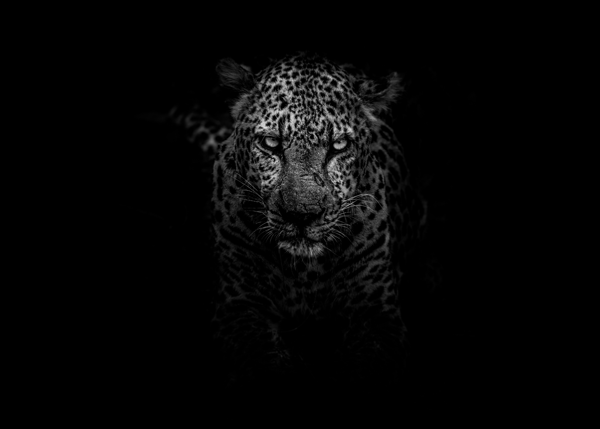

Emmanuel Otieno
Emmanuel OtienoAbout Me
My name is Emmanuel, I'm a passionate and driven individual with a strong interest in software development. I'm fueled by the challenge of crafting innovative solutions that solve real-world problems and enhance user experiences.My journey in this field has instilled a love for continuous learning and exploration, allowing me to constantly develop and refine my skills. Eager to contribute my knowledge and enthusiasm to collaborative teams and challenging projects, I strive to make a positive impact within the ever-evolving tech landscape. This portfolio serves as a testament to my dedication and a glimpse into my potential as a valuable asset in the software development world.
Hobbies
- Gaming
-Experienced gamer with a passion for strategic thinking and problem-solving. Adept at collaborating with teammates to achieve common goals in online multiplayer environments. - Listening to music
-Enthusiastic music listener who enjoys exploring different genres and discovering new artists. This passion for exploration fuels my creative problem-solving skills. - Solving puzzles
-Avid puzzle solver who enjoys the challenge of unraveling logical problems. Skilled at approaching problems from different angles and developing creative solutions. - Reading
-Enjoy reading non-fiction and learning about diverse topics. Skilled at researching and analyzing complex information, often drawing connections between seemingly disparate ideas - Watching Sports
-Passionate sports fan following various team sports. Keen observer of team dynamics and leadership strategies.
Resume
Education
Moringa School
Certification in Software Engineering - Expected Nov 2024
Currently learning the actual practicals when it comes to software development. A lot of industry-driven learning with daily stand ups, mini projects and random coding tests from codewars.com
Kenyatta University
Bsc. Computer Science - Expected July 2024
Experience
Herufi Technologies
Front End React Developer - August 2023 to December 2023
Took part in development of the company's webpage, specifically translating the wireframes to actual front end code and also consuming the company's APIs to communicate with their backend
Skills
My spirit animal
The Panther
The panther, my spirit animal, embodies quiet strength and unwavering resolve. It stalks the shadows, unseen yet ever-present, its grace masking a powerful predator. With each step, it displays a silent confidence, its movements both measured and decisive. Like the panther, I navigate challenges with focused determination, ready to pounce on opportunities with strategic precision. Its spirit reminds me to harness my inner strength, embrace adaptability, and move through life with a quiet sense of power.